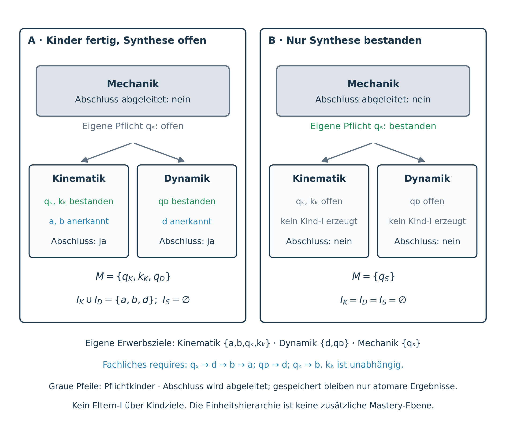

Learning Units
A learning unit (German: Lerneinheit; conceptual technical name:
LearningUnit) makes a recognisable learning promise. It explains why the
outcome matters, organises learning goals or smaller units, and declares the
assessment and recall obligations belonging to its own promise.
The structure applies recursively: a course can contain topic units, a topic smaller units, and a small unit atomic goals. Completion is derived from actual goal outcomes and required children. No unit mastery or additional learner qualification is stored.
Concept status. This is the accepted recursive design, not an announcement of an implemented schema, compiler, access mode or migration. The existing binary goal results, global recognition contract and graph semantics remain the foundation.
1. Learning promise and authoritative placement
A unit identifies an outcome learners can understand, for example interpreting and predicting a transition process. Its motivation explains the purpose of the work. An appropriate existing orientation goal may supply this entry; every heading or nesting depth does not require a new motivation atom or exam.
Use existing program units, goal placements and reviewed composition references to assign the unit role in a resolved, versioned educational context. Do not copy goal definitions into another curriculum tree. A cluster is not automatically a unit, and a temporary focus or expanded UI branch cannot create a new recognition contract.
Years and semesters place work in time. A year may contain several units and
a unit may span calendar periods. Calendar labels alone establish neither a
learning promise nor assessment coverage. Personalization Levels 1–4, QA
maturity and goal-difficulty level keep their existing meanings.
2. Recursive targets and direct acquisition ownership
For an authoritative unit U, resolve Children(U), its required child units
after authored choices; Own(U), its directly assigned actual atomic targets;
and the deduplicated recursive scope
Own may contain subject, orientation, assessment and memorization goals. Synthetic composition markers are not atomic targets merely because they appear in the tree. Resolve direct entries, applicable choices, subtree references and projection roles before computing membership. Every valid unit has a nonempty resolved T(U). A pure aggregate needs actual required children; an empty or unresolved structure is not a completed unit.
Within one resolved acquisition path each atom has one direct home: the smallest authoritative unit that actually teaches or assesses its outcome. A parent includes child targets through T(V); it does not claim them again in Own(U). Later application and another subject can require the same competence without assigning another first acquisition. Another resolved curriculum may place it differently without changing its canonical identity or global mastery.
Hidden prerequisiteOnly support remains in prerequisite validation. A reference
does not promote it into Own/T, increase the progress denominator or award
mastery. Missing support or ambiguous acquisition ownership is an authoring
finding, not an empty completed unit.
3. Assessments at the appropriate scale
Every ordinary subject target in Own(U) needs an own local assessment consumer and independently reviewed tasks and normal rubric proving its application. Own memory goals retain verified recall. All own assessment and memory obligations remain explicit.
Required recall belongs with the unit that first acquires the corresponding knowledge. A broad existing memory goal spanning proposed children must not be moved to the parent merely to make those children complete without their real card duties. Retain a fitting larger completion boundary, or review a genuine goal/card-selection split with stable identities and explicit evidence migration. Support references cannot stand in for missing required recall. A parent's additional own obligations must not hide obligations belonging to its children.
| Unit role | Own assessment responsibility |
|---|---|
| Acquisition unit | Cover each own subject competence that the unit may implicitly recognize. |
| Integrative parent | May require its own synthesis assessment combining child competencies, even without a new ordinary target. |
| Pure aggregate | May have no own assessment; it aggregates required children and any genuine own targets. |
A synthesis assessment is an explicit atomic goal of the parent. Its pass does not pass child exams, verify child cards or recognize child targets under a replacement contract over all descendants. A new integrative subject competence, if authored, belongs to Own(U) and needs its own reviewed coverage. An ordinary navigation heading does not itself demand an extra assessment.
Cards alone are not evidence of independent application. Naming a card collection a unit does not establish application competence. Displaying a separate recall block changes neither its explicit recall duty nor this limit.
4. Local recognition, durable global effect
Let M be explicit mastery, Q assessment atoms and K memorization atoms. Resolve inherited and cluster-expanded prerequisites into the full atomic relation R. For each unit, only its own protected obligations seed recognition:
Traversal continues through mastered intermediates and outside support. Every ordinary subject target in Own(U) requires a valid immutable own assessment contract. An uncovered ordinary endpoint is a missing contract, not a zero-work success. This does not prohibit aggregates or synthesis-only parents. Orientation retains its motivational-marker meaning; it certifies neither subject competence nor an interaction that did not occur.
Valid I_U sets contribute to global M_eff through durably applicable contracts, including after focus or Personal-Curriculum changes. Implicit results are not fed back into this local derivation. A parent must not replace Own(U) by T(U) to bypass a child's local obligations or enlarge an old exam's meaning.
An individual own target can be recognized before the whole unit completes. An unrelated open card or another branch keeps completion open without withdrawing valid achievement. An open parent synthesis or later external consumer likewise does not reopen a child's recognized competence. Retain immutable historical contracts and stable result attribution.
5. Derived recursive completion
Assessments and memory goals never receive implicit mastery. Every own Q/K therefore needs its explicit positive outcome, and each required child must complete its own contract. Parent synthesis alone cannot close an unfinished child; child completion cannot pass the parent's synthesis. A pure aggregate can complete solely through its required children.
Report progress over deduplicated T(U). Do not add child percentages to a parent's atom count or store cluster mastery. A view that omits a required child cannot establish parent completion. Unresolved membership or contract validity is unavailable, not complete. Completion does not itself decide entry; see Learning-Unit Progression and Access Policy.

Illustrative cases. Completed children do not pass an own parent synthesis. A parent synthesis pass does not complete open child exams or cards. Unit completion is recursive; valid recognition of child competencies stays global.
6. Prerequisites and feasible unit boundaries
The atomic graph retains acyclicity, inherited and expanded requirements and transitive minimality. Grouping does not rewrite these facts. A whole-unit prerequisite is a deliberate authored claim about complete promises: one atomic dependency on a small part of a module does not justify making the whole module compulsory. Dependency summaries are diagnostics, not new gates.
A course presented as complete ordered blocks must admit an acyclic projected block order and valid internal atomic traversal. Atomic acyclicity alone is insufficient: acquisition order a → b → c cannot place a,c in one indivisible block and b in another without a block-order conflict. Revise the boundary or explicitly permit interleaving. Technical locks and direct assessment access remain an open policy choice, not a consequence of nesting.
7. Optional calendar and workload profiles
A reference plan can place units or activities in years, semesters or dated periods. It declares entry assumptions and checks every prerequisite, including hidden and cross-subject support. Entry assumptions write no mastery. Same-period dependencies need a teachable internal order; an unplanned prerequisite is a gap.
Workload is a separate claim: state reference learners, entry basis, activities, effort model, uncertainty, time capacity and reserve. Count shared acquisition once and extra practice explicitly. Goal weight/count is not a time estimate; cross-subject budgets need a common calibration and binding subject/resource limits as well as a total. A valid recognition contract needs no completed time-budget claim, and a feasible timetable does not prove application.
Formal profiles are in Graph Definition §12 and the time-axis contract.
8. Evidence and implementation boundaries
Review the promise, source scope, stable placement, Own/child membership, Q/K and card ownership, normalized prerequisites and own task/rubric meaning. Check each distinct protected set releasing an own competence, including authorized task variants: can a learner pass while entirely lacking an essential recognized competence? Such a counterexample invalidates the contract.
Source fidelity, independent content reviews, applicable strict QA gates, reproducibility and truthful acceptance remain required. Existing curricula are not declared reviewed for recursive units by this concept. Machine validation or a technical preview proves neither real-host acceptance nor usability or learning effectiveness.